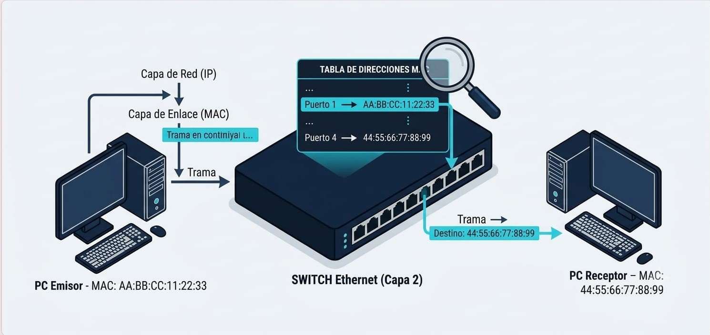

¿Qué es la Capa 2: Enlace de Datos?
La Capa de Enlace de Datos es la segunda capa del modelo OSI. Se encarga de facilitar la transferencia de datos de forma confiable a través de un medio físico dentro de una misma red local (LAN). Toma los paquetes provenientes de la Capa de Red y los transforma en tramas (frames) para ser enviados directamente entre dispositivos conectados físicamente.
Características Principales
- Direccionamiento Físico (Dirección MAC): Utiliza identificadores únicos grabados en las tarjetas de red de cada dispositivo para saber exactamente a quién enviar la información.
- Detección y Control de Errores: Incluye mecanismos (como el CRC o Comprobación de Redundancia Cíclica) para detectar si los datos sufrieron daños al viajar por el cable o la señal Wi-Fi.
- Control de Flujo: Asegura que un dispositivo muy rápido no sobresature de datos a uno más lento.
- Subcapas LLC y MAC: Se divide en dos subcapas: LLC (Logical Link Control) que interactúa con la capa superior, y MAC (Media Access Control) que gestiona el acceso al medio físico.
💡 ¿Sabías que...? Las direcciones MAC se graban permanentemente en el chip de la tarjeta de red desde su fabricación en la fábrica, por lo que también se les conoce como "direcciones de quemado" (Burned-In Address / BIA).
Ejemplos y Tecnologías
- Switch Ethernet: Dispositivo principal de Capa 2 que reenvía datos utilizando las direcciones MAC destino.
- Estándar Ethernet (IEEE 802.3): La tecnología de red de cable más común utilizada en las redes locales del campus.
- Wi-Fi (IEEE 802.11): Encargada del manejo del enlace de datos a nivel inalámbrico.
- Dirección MAC: Ejemplo:
1A-2B-3C-4D-5E-6F.
Cómo viajan los datos entre dispositivos
El siguiente diagrama ilustra cómo la Capa 2 empaqueta los datos en tramas agregando direcciones MAC de origen y destino para enviarlos directamente de un dispositivo a otro mediante un switch.
